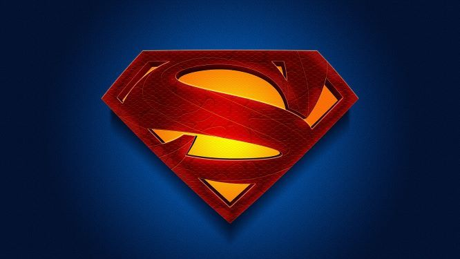
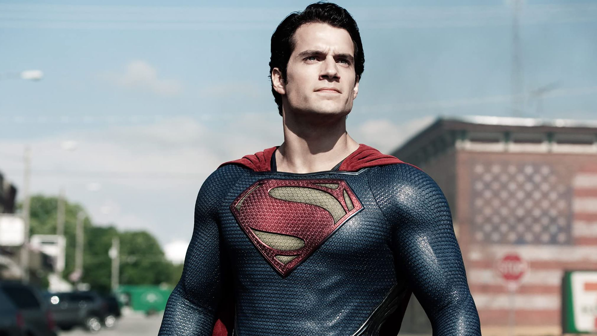

Superman je eden najbolj prepoznavnih in ikoničnih superjunakov v zgodovini stripov, filmov in popkulture. Bil je ustvarjen leta 1938 s strani Jerryja Siegela in Joa Shustera ter je postal ena najbolj priljubljenih in prepoznavnih ikon založbe DC Comics.
Kot superjunak je Superman znan po svojih izjemnih močeh in sposobnostih, ki izvirajo iz njegovega izvornega planeta Krypton. Na Zemlji je Superman znan kot Clark Kent, identiteta, ki jo prevzame, ko živi med ljudmi. Vendar je njegov pravi izvor Krypton, izumrli planet v drugem vesolju.
Najbolj opazen vidik Supermana je njegova nadčloveška moč. Je izjemno močan, hitrejši od katerega koli človeka, sposoben leteti in ima sposobnost prebijanja skozi trdne predmete. Prav tako ima neverjetno odpornost na poškodbe in je skoraj neuničljiv. Eden od njegovih najbolj prepoznavnih simbolov je S grb na prsih, ki predstavlja upanje in pravičnost.
Poleg svoje fizične moči ima Superman tudi izjemne čutila, kot so rentgenski pogled, sposobnost super-slišanja in super-hitrosti. Prav tako je znan po svojem brezmejnem intelektu in modrosti. Svoje sposobnosti uporablja za zaščito nedolžnih in boj proti zlu.
Superman je znan po svojem poštenem in nesebičnem karakterju. Njegova moralna načela so trdna in verjame v boj za pravičnost, resnico in svobodo. V svoji vlogi junaka se bori proti zlikovcem in zagotavlja varnost ljudem, pri tem pa si prizadeva ohraniti svetlobo in upanje v svetu, ki včasih postane temen.
Poleg stripov je Superman postal priljubljen tudi v filmih, televizijskih serijah in animiranih produkcijah. Njegova prva filmska predstava je bila leta 1978 z naslovom "Superman: The Movie", v kateri je igral Christopher Reeve. Superman je postal globalno prepoznaven lik in eden najbolj ikoničnih simbolov popularne kulture.
Superman predstavlja idealno kombinacijo nadčloveških moči in neomajnega značaja, kar ga postavlja v vrh superjunakov. Njegova zgodba in vrednote so navdihujoče in vzbujajo občutek upanja, da lahko posamezniki s svojimi darovi in pogumom premagajo ovire ter si prizadevajo za boljši svet.